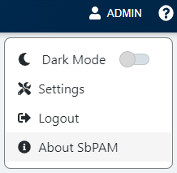
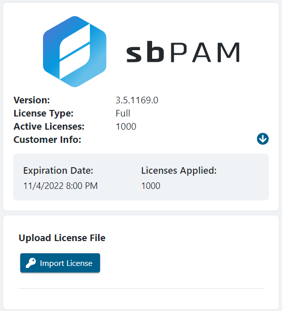
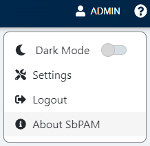
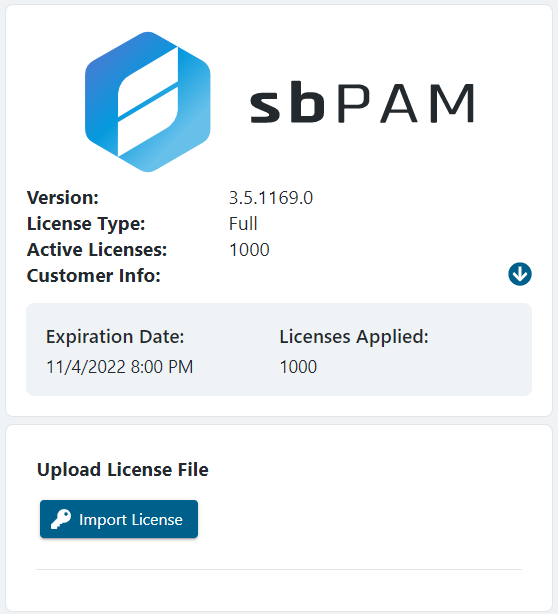

Summary
This article outlines how to apply a new license to the SbPAM server.
Instructions
SbPAM comes with a 30-day trial license. Once this trial has expired, a new license key file will need to be imported.First, log-in to the SbPAM web application as an account with the Administrator role. In SbPAM 3.5 or earlier, the built-in Admin account may be used. In SbPAM 3.7 or later, a local user with the Administrator role may be used.
IMPORTANT: The "Domain" field must be set to "<none>" in order to log-in with the built-in Admin account.
In the upper-right of the page, click your account name, and then About SbPAM.

The About SbPAM page will be displayed, including an Import License button that can be used to update SbPAM's license.
IMPORTANT: If a new license key file is needed, please contract your Netwrix or Stealthbits Account Manager.

The Import License button will open a Windows file dialog. Navigate to the location of the new license key file, select it, and click Open. The license will be imported to SbPAM, and the license information displayed will be updated.

The About SbPAM page will be displayed, including an Import License button that can be used to update SbPAM's license.
IMPORTANT: If a new license key file is needed, please contract your Netwrix or Stealthbits Account Manager.

The Import License button will open a Windows file dialog. Navigate to the location of the new license key file, select it, and click Open. The license will be imported to SbPAM, and the license information displayed will be updated.
Alternate Instructions (PowerShell)
Open an elevated PowerShell window.Modify the following PowerShell script so that the second line contains the correct local path for your license file:
Add-Type -AssemblyName System.Web $licenseFilePath = "path to license file" ## Change to match the local path to the license file $license = Get-Content $licenseFilePath $encoded = [System.Web.HttpUtility]::UrlEncode($license) $sbpamURI = "http://localhost:6501" Invoke-RestMethod -Method POST -URI "$($sbpamURI)/api/v1/LicenseInfo?License=$encoded"Copy and paste the modified script into PowerShell and execute it. Your license should now be imported into SbPAM.